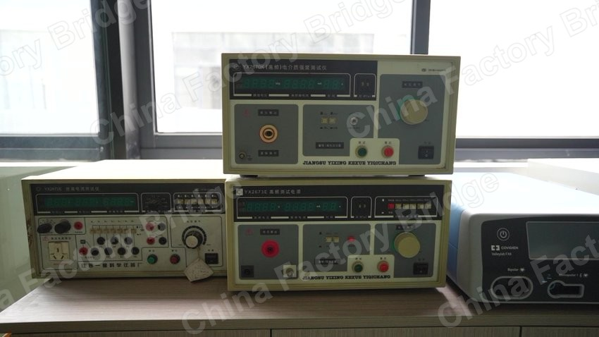
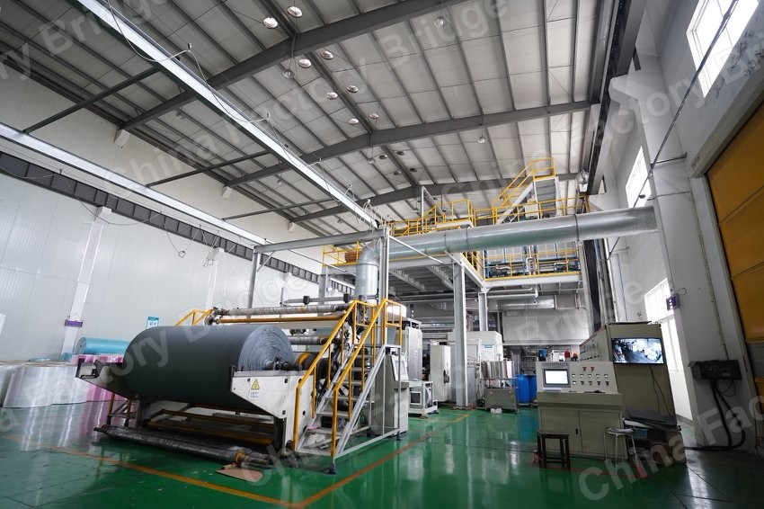

FACTORY BRIDGE / FIELD MATERIALS
Gewuji
Field-based factory communication for overseas buyers and Chinese manufacturers.
Gewuji is the home of Factory Bridge — a practical project that turns supplier replies, product materials, workshop scenes, and factory information into clearer buyer-facing communication.
We help overseas buyers ask better questions before samples, deposits, and larger orders.
We help Chinese factories make their products, capabilities, and field materials easier for overseas buyers to understand.




Factory Bridge
Factory Bridge is built around one simple idea: most sourcing problems do not begin with production. They begin with unclear communication.
A buyer may not know what to ask before ordering samples. A factory may have real capability, but its materials fail to explain what buyers actually need to know.
Factory Bridge sits between these two sides — not as an auditor, inspector, or legal advisor, but as a practical communication layer.
For Overseas Buyers
Before ordering samples, paying a deposit, or moving toward a larger order, clarity matters.
Factory Bridge helps you review supplier replies from a practical communication angle:
- What has been clearly confirmed
- What is still vague
- Which supplier questions should be asked next
- Whether sample, packaging, MOQ, lead time, and payment details are aligned
- How to write a clearer follow-up email
This is not a formal factory audit, legal due diligence, or quality inspection. It is a clearer way to organize supplier communication before you commit.
Explore Buyer SupportFor Chinese Factories
Many factories already have products, equipment, workshop photos, brochures, and sales materials.
The problem is not always capability. The problem is that overseas buyers cannot quickly understand what the factory is good at.
Factory Bridge helps turn existing factory materials into buyer-understandable English sales content:
- Product pages
- Factory profiles
- Development emails
- Brochures
- Workshop photos and videos
- Field-material based trust assets
Not just translation. A clearer structure for how overseas buyers judge suppliers.
Explore Factory SupportField Materials
Factory trust is often built through details.

Gewuji Lab
Small web tools, experiments, and side projects built while exploring practical web publishing, SEO, and buyer-facing content systems.
The main business focus remains Factory Bridge.
About Lao Cao
Gewuji is built by Lao Cao, who works with factory scenes, product materials, field photos, and practical buyer communication.
The focus is simple: observe real factory materials, clarify what matters, and turn scattered information into content overseas buyers can understand.

Questions
Clear boundaries for first-time visitors, search engines, and AI search systems.
What is Gewuji?
Gewuji is the main site for Factory Bridge, field materials, and practical supplier communication support between overseas buyers and Chinese factories.
What is Factory Bridge?
Factory Bridge is a communication layer for supplier replies, product materials, workshop scenes, and buyer-facing factory information.
What is the service boundary?
Factory Bridge is not a formal factory audit, legal due diligence, or quality inspection service. It focuses on clearer supplier communication, field-material based context, and buyer-understandable factory information.
Where are the old tools?
Small tools and experiments are collected under Gewuji Lab. The main business focus remains Factory Bridge.
Talk about buyers, factories, or field materials
If you are an overseas buyer or a Chinese factory trying to improve buyer-facing materials, email me.
- Overseas buyers who want clearer supplier context before sample orders
- Chinese factories that want better English introductions, product photos, and sales materials
- Factory field materials that need to become clearer communication assets
- laocao@gewuji.dev